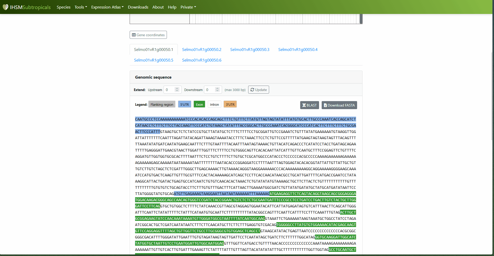

Sequence Explorer
EasyGDB is a tool developed at IHSM "La Mayora" to build genomic portals in a simple and maintainable way — the same tool that powers IHSM Subtropicals, MangoBase and other subtropical species portals. During my internship I contributed to the development of several of its modules, including Sequence Explorer: a tool that lets you search for any gene by its identifier and retrieve its genomic, transcript and protein sequence, with exons, introns, UTRs and flanking regions highlighted directly from the genome's GFF3 annotation.
Key aspects of the development
-
Multi-organism via configuration, no code changes needed: each genome
is registered in a
seq_exp.jsonfile with its gene list, GFF3 annotation, BLAST database and (optionally) its JBrowse link — allowing any EasyGDB-based portal to activate the tool for a new species without modifying a single line of PHP. - Color-coded view of gene structure: exons/CDS, introns and UTRs are visually distinguished both in the full genomic sequence and in the transcript view, making biological interpretation easier at a glance.
- Fixed a negative-strand bug: I found and fixed an error where genes on the negative strand showed their exon/intron blocks in the wrong positions. The problem was that, after reverse-complementing the sequence returned by samtools, the exon/CDS offsets were still being calculated as if the gene were on the positive strand.
- Integration with JBrowse and BLAST: from the search results, you can jump straight to the gene's position in JBrowse, or launch a BLAST search on the retrieved sequence, without leaving the workflow.
The tool in action

